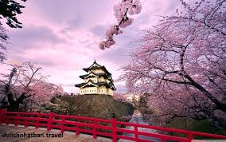
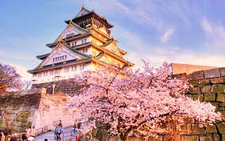

Lâu đài Kumamoto
Xây dựng năm 1600, lâu đài Kumamoto là một điểm tham quan không thể bỏ qua của thành phố Kumamoto. Đây là một trong ba tòa lâu đài lớn nhất ở nước Nhật...

Đền Kifune
Nằm kề bên Kurama là ngọn núi Kifune, nơi nổi tiếng chứa đựng nguồn nước tinh khiết nhất. Ngôi đền Kifune đã trở thành địa điểm nổi tiếng thu hút những...

Núi Phú Sĩ
Một trong những biểu tượng nổi tiếng nhất Nhật Bản, Phú Sĩ là ngọn núi cao nhất và là một trong “Ba núi Thánh” của quốc gia. Ngọn núi lửa vẫn hoạt động...